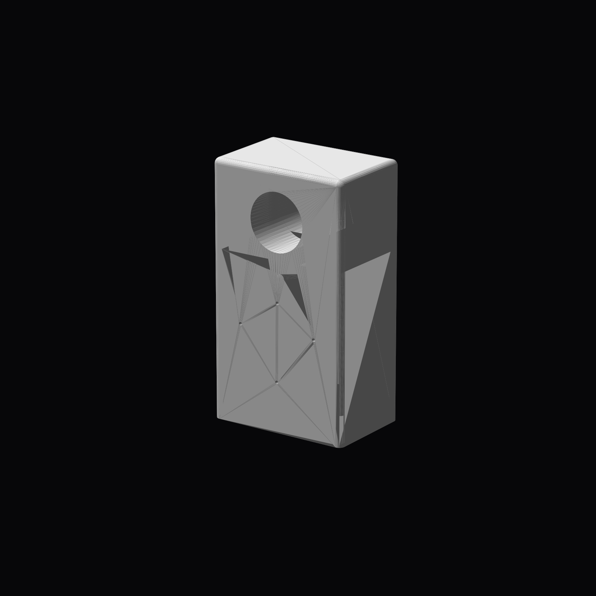

Altijd een droog zadel.
SeatShell is een zadelcover die vast onder je zadel zit opgeborgen. Als het regent trek je de hoes eruit, plaats je hem over het zadel en na gebruik berg je hem weer netjes op. Zo heb je altijd een droge zitplek, zonder losse accessoires.

Geen los hoesje
De hoes blijft altijd aan de fiets verbonden en raakt daardoor niet kwijt.
Snel gepakt
Bij regen heb je hem direct bij de hand. Je hoeft niets mee te nemen of op te bergen in je tas.
Netjes opgeborgen
Na gebruik verdwijnt de hoes weer terug in de behuizing onder het zadel.
1. Zit onder je zadel
De behuizing wordt onder het zadel gemonteerd en blijft tijdens dagelijks gebruik op zijn plek.
2. Trek de hoes eruit
Wanneer het begint te regenen trek je de hoes uit de behuizing en plaats je die over het zadel.
3. Stop hem terug
Na gebruik gaat de hoes weer terug in dezelfde opbergruimte, zodat alles compact en netjes blijft.
Compact onder het zadel
Compact weggewerkt, maar altijd direct beschikbaar.
Moeilijk te stelen
De behuizing is bedoeld om stevig onder het zadel bevestigd te worden.
Zelfdrogend concept
Ventilatieopeningen helpen de hoes na gebruik weer te drogen.
Midnight
De meest strakke en technische uitvoering, bedoeld als rustige basisvariant.
Stone
Een lichtere uitvoering met een meer rustige, stedelijke uitstraling.
Sport
Een slankere variant met een sportievere uitstraling.